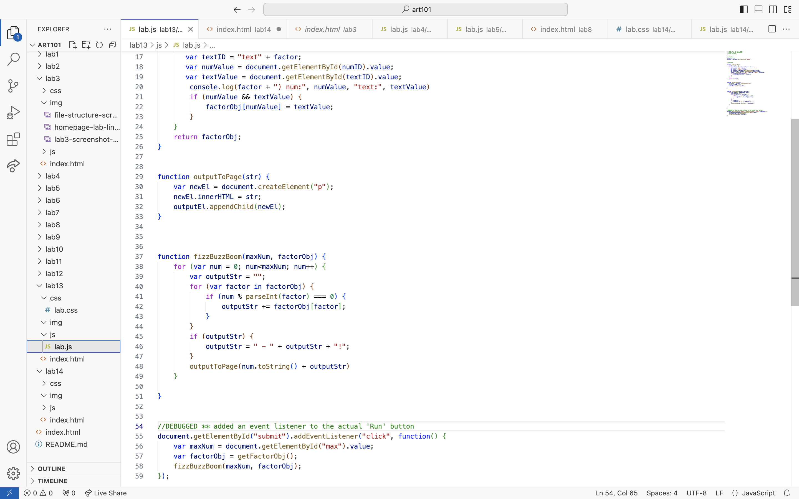
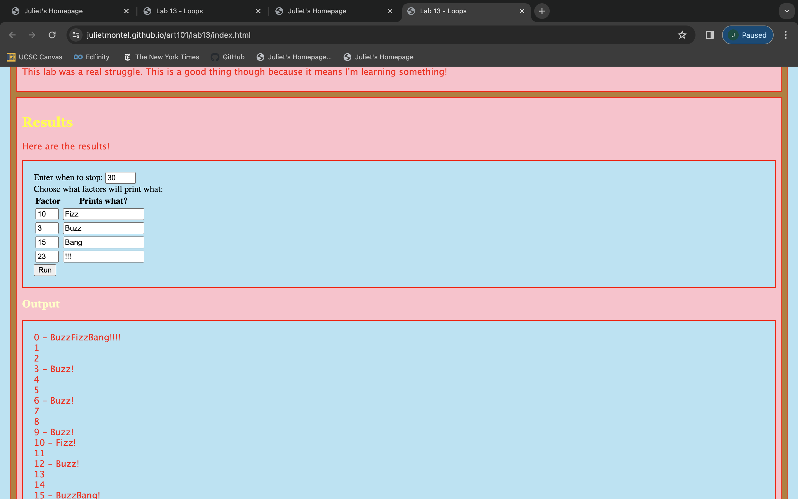

Lab 14 - Debugging Tools & Strategies
Challenge
In this lab we are being asked to go through our past labs that use JavaScript and debug them. We will be using the strategies and tools we learned in class to do this debugging.
Problems
Not that this a problem, but I found it hard to find a bug in my code. That makes it sound as if my code is 100% perfect, it's absolutely is not, but when I turn in my labs I make sure they work before I actually turn them. So all my JavaScript seemingly works. The only lab that is super incomplete is lab 13, luckily I was able to work some debugging magic and was able to see my issues and attended to them as needed!
Reflection
This lab felt like a nice step back from what we've been doing the last few lectures and labs. In a way this felt like it's own refection of our time in this class, as it is one of the last weeks of the quarter. We've come so far!
Results
Here are my results:
Debugging
 These two images are from my debugging from lab 13. Lab 13 was an especially difficult for me to figure out. I think it was because it had a lot of moving pieces to them but fortunately I was able to figure it out. My issue for the entire lab was trying to figure out if the functions I had were even producing anything at all because of the biggest problem I had: nothing would display on my webpage. Because nothing would show up I just assumed that the enire program was broken. I would go in a fix the functions themselves over and over, I would check the HTML just incase I didn't link something correctly, I was looking everywhere for what could possibly be wrong. And then it hit me. I didn't have an event listener for the 'Run' button. Then it all clicked. I made the listener and everything worked correctly. It was such a satisfying fix.